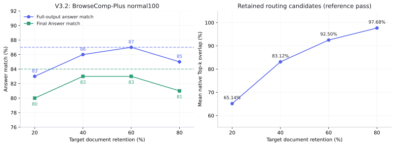
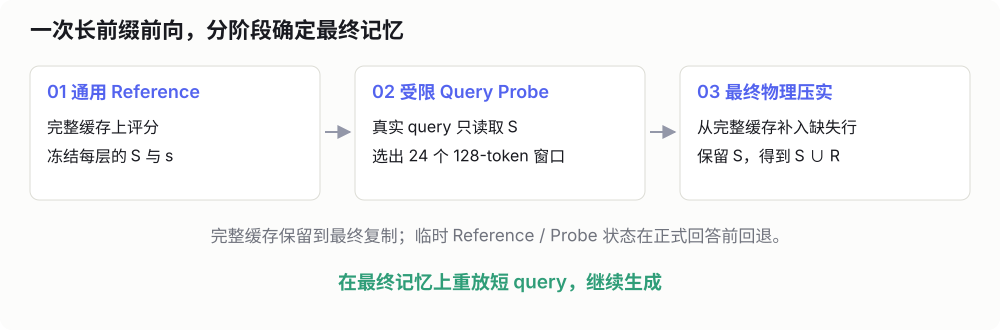
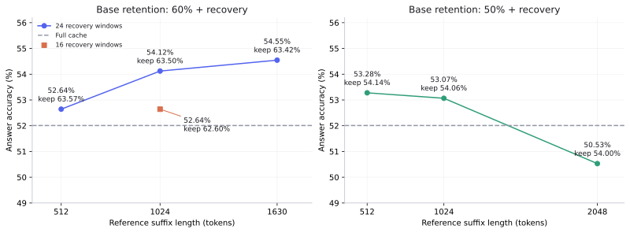
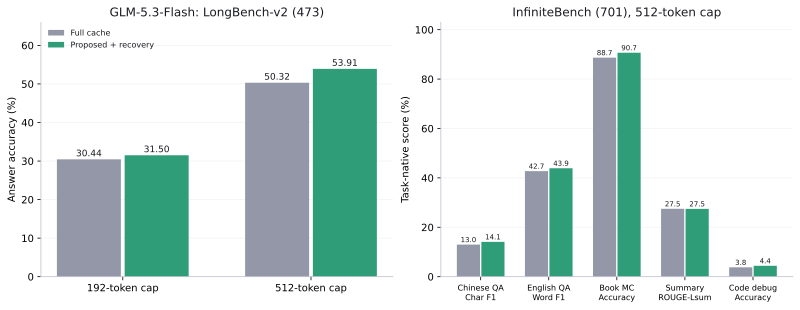

DeepSeek 稀疏注意力架构下的上下文压缩
在使用像 Codex 这样的 LLM Agent 时，我们应该都遇到过这样的场景：随着工作流的进行，Agent 上下文长度不断增长，当长度逼近 LLM 窗口上限或者提前设定的阈值时，插件就会触发上下文自动压缩，为后续工作流腾出上下文空间。
这就是所谓的 Auto-compaction 技术，其目的是在压缩 LLM 上下文占用的同时，完整保留 Agent 后续工作流所需的关键状态。根据公开资料，目前各家的 Agent 工具大多是通过生成文本摘要来执行这一过程的，例如 Kimi Code、Claude Code 以及 Gemini CLI。不过，我体感上下文压缩做得最好的 Codex，其具体压缩算法我们仍不得而知，其技术文档中明确提到，它使用了远端原生压缩（remote native compaction），并且明确指出并非生成式摘要。
事实上，通过 Prompt 让模型做生成式摘要，是一种偏上层的工程折中；相比之下，远端原生压缩则更接近模型的本质。从这一角度思考，一个自然的切入点便是从 KV Cache 层面，实现原生的上下文压缩，而这又与模型的架构和注意力实现方式息息相关。
在目前的开源生态下，最新一代的主流开源大模型大多是 DeepSeek 稀疏注意力（DeepSeek Sparse Attention, DSA） 架构，例如 DeepSeek-V4、Hy4 以及 GLM-5 等1。DSA 架构依赖 Indexer heads 进行动态候选路由，而后主 MLA heads 再在潜空间中进行交互和计算，这意味着，针对传统 Transformer 架构设计的压缩算法无法直接使用，必须针对 DSA 的路由机制，设计一套原生的压缩方案。
注 1
最新的 Qwen3.8-Flash-Next 采用了 Qwen 稀疏注意力（Qwen Sparse Attention， QSA）架构，该架构与 DSA 在使用轻量索引器筛选 Token 的思路上大致相似；而 Kimi K3 则采用 Kimi Delta Attention（KDA）线性注意力架构，而非稀疏注意力。
因此，我们希望有一种上下文压缩方法，实现如下目的：
在 DSA 架构下，对模型的 KV Cache 进行原生上下文压缩，
在释放上下文窗口的同时，保留 LLM 执行任务所需的内部状态
在 DSA 架构中，真正参与主注意力计算的 Cache 数量始终保持固定，不随上下文长度的增加而增长。遵循这一结构特性，我们采用基于驱逐式（Eviction-based）的原生压缩：通过语义监督进行探测，并保留被 Indexer heads 命中率较高的 Cache，在后续用户具体的 Query 到达后，再针对问题涉及的局部细节进行按需 Cache 恢复。
在包括 DeepSeek-V4-Flash-0731 以及 GLM-5.3-Flash 等模型的实验结果表明，提出的上下文压缩方法在 60% 保留率下即可实现无损压缩，任务成功率甚至超过未压缩的全量基线，同时仅引入轻度的额外计算和时间开销。
如果您对此感兴趣，请继续阅读本文，预计完整阅读时间约 45 分钟。
1 背景：DSA 架构介绍
首先我们先简单回顾一下 DSA 架构，其核心思想是将注意力计算解耦为两个串行部分，首先由轻量级的 索引头（Indexer Heads） 对全量上下文进行相关性打分与 Token 筛选，随后仅在筛选出的 Top-k 位置上，由模型的 多头潜在注意力（Multi-head Latent Attention, MLA） 执行注意力计算并生成后续 Token2。
注 2
事实上，DSA 不一定要和 MLA 绑定，也可以适配 GQA 等架构。但由于上述列出的开源 DSA 大模型都使用 MLA 架构，因此本文默认采用 DSA + MLA 叙述。
给定第 t 个位置的查询隐状态 \mathbf{h}_t \in \mathbb{R}^d，模型需要从与历史上下文位置 s \le t 交互。为了避免注意力遍历全部历史位置带来的高昂开销，首先由一组低维的 Indexer Heads 计算当前位置 t 与历史位置 s 之间的索引得分 I_{t,s}：设共有 H^I 个索引头，第 j 个 Indexer Heads（1 \le j \le H^I）由 \mathbf{h}_t 投影生成低维索引查询向量 \mathbf{q}_{t,j}^{I} \in \mathbb{R}^{d^I} 以及对应的标量权重 w_{t,j}^{I} \in \mathbb{R}。与此同时，每个历史位置 s 在缓存中维护一个跨 Indexer Heads 共享的低维键向量 \mathbf{k}_s^{I} \in \mathbb{R}^{d^I}。而后通过如下公式计算索引得分 I_{t,s}：
I_{t,s} = \sum_{j=1}^{H^I} w_{t,j}^{I} \cdot \operatorname{ReLU}\!\left(\mathbf{q}_{t,j}^{I} \cdot \mathbf{k}_s^{I}\right).
由于 d^I 维度极小且索引键 \mathbf{k}_s^I 跨头共享，该打分过程的计算开销极低。随后根据索引得分 I_{t,s}，从所有历史位置 s \le t 中筛选出得分最高的 Top-k 个位置（一般取 k=2048），构成当前位置 t 的稀疏候选集 \mathcal{C}_t：
\mathcal{C}_t = \operatorname{TopK}_{s \le t}\!\left(I_{t,s},\, k\right).
在确定候选集 \mathcal{C}_t 后，由主注意力层的 H_m 个 MLA Heads 仅该候选集上执行注意力计算并生成后续 Token。MLA 将每个位置 s 的隐状态 \mathbf{h}_s 投影为一个低维的键值潜向量 \mathbf{c}_s^{KV} \in \mathbb{R}^{d_c}（d_c \ll d），并辅以一个携带 ROPE 的共享键分量 \mathbf{k}_s^{R} \in \mathbb{R}^{d_r}：
\mathbf{c}_s^{KV} = W^{DKV} \mathbf{h}_s, \qquad \mathbf{k}_s^{R} = \operatorname{RoPE}\!\left(W^{KR} \mathbf{h}_s\right).
对于被 Indexer Heads 选中的候选位置 s \in \mathcal{C}_t，第 i 个 MLA Head（1 \le i \le H_m）的键向量 \mathbf{k}_{s,i} 与值向量 \mathbf{v}_{s,i} 均由该位置的潜向量 \mathbf{c}_s^{KV} 恢复得到：
\mathbf{k}_{s,i} = \left[W_i^{UK} \mathbf{c}_s^{KV};\, \mathbf{k}_s^{R}\right], \qquad \mathbf{v}_{s,i} = W_i^{UV} \mathbf{c}_s^{KV}.
最终，各 MLA Heads 仅在候选集 \mathcal{C}_t 内部计算主查询向量 \mathbf{q}_{t,i} 与候选键 \mathbf{k}_{s,i} 的注意力权重 \alpha_{t,s}^{(i)}，并加权求和得到当前位置的输出 \mathbf{o}_{t,i}：
\alpha_{t,s}^{(i)} = \frac{\exp\!\left(\mathbf{q}_{t,i}^\top \mathbf{k}_{s,i} / \sqrt{d_k}\right)}{\sum_{s' \in \mathcal{C}_t} \exp\!\left(\mathbf{q}_{t,i}^\top \mathbf{k}_{s',i} / \sqrt{d_k}\right)}, \qquad \mathbf{o}_{t,i} = \sum_{s \in \mathcal{C}_t} \alpha_{t,s}^{(i)} \mathbf{v}_{s,i}.
因此，在 DSA 架构的推理过程中，系统并行维护着两套缓存：用于全局快速路由打分的 Indexer Cache \left\{\mathbf{k}_s^I\right\}，以及用于主注意力计算的 MLA Cache \left\{\left(\mathbf{c}_s^{KV}, \mathbf{k}_s^R\right)\right\}。随着上下文长度 L 的增长，参与 MLA 注意力计算的 Token 数量始终固定为 |\mathcal{C}_t| = k，这将注意力计算复杂度从 O(L^2) 降至 O(Lk)，但这两套物理缓存仍会随上下文的累积而持续线性增长。
2 保留关键 Cache 的上下文压缩
在探讨具体的压缩算法之前，我们首先明确从原生 Cache 层面做上下文压缩的目标：对于一段历史上下文 H，我们希望构造一段长度更短的 C(H)，使得当后续用户输入 U 到达时，基于压缩生成的输出分布与未压缩时尽可能一致：
p_\theta(y \mid C(H),\, U) \approx p_\theta(y \mid H,\, U).
围绕这一目标3，目前的上下文压缩方法为了减少物理驻留的历史 Cache 数量，大致遵循两种不同的设计理念：
注 3
更准确的说，我们事实上是希望
p_\theta(y \mid C(H),\, U) \approx p_\theta(y \mid R(H,U),\, U).
其中 R(H,U) 表示上下文 H 中真正和用户输入 U 相关的部分。模型在上下文 R(H,U) 下的表现应当高于原始上下文 H 下的表现。
- 驱逐式压缩（Eviction-based Compression）：从模型注意力的角度出发，剪裁掉那些对后续注意力计算（Q, K, V, O）贡献微小的 Cache，就能在不显著改变输出的前提下，实现上下文压缩。
- 合并式压缩（Merging-based Compression）：从表征的角度出发，不彻底丢弃信息，而是将键值向量表征按权重融合到保留的代表 Token 上，让合并后的 Cache 贴近原始的全量输出。
那么对于 DSA 架构，哪一种压缩理念更为契合呢？我们回忆一下，在传统的稠密注意力计算中，需要与全部历史位置交互，此时驱逐任何 Cache 都难以避免地造成注意力分布被截断；而对于 DSA 架构，其本身就类似于对稠密注意力做了解耦和剪裁，即使历史上下文累积到了 1M 长度，Indexer 也会在每一层裁掉绝大部分位置，仅保留固定的 k 个进行 MLA 主注意力交互，未被选中的位置对输出的贡献严格为零。
这一结构特性意味着 DSA 其实天然适合驱逐式压缩，既然主注意力本身就只读取少量的 Cache，那么在压缩时，如果能够保留那些在未压缩情况下会被主注意力交互的关键 Cache，那么压缩后的注意力输出在理论上也是完全无损的。
另一方面，从 MLA 的角度来看，其将键打分与值读取信息耦合在同一个共享潜向量 \mathbf{c}_s^{KV} 中。如果采用合并式压缩去改写潜空间表示，不仅容易干扰原有的 Key 路由得分，而且为了适配当前的高效推理后端，可能还需要额外开辟独立的增量页来单独存放 Value 的合并残差。
因此，从 DSA 的稀疏路由本质出发，最适配的方法是驱逐式压缩，这是最契合该架构的压缩切入点。
2.1 结合路由频次与注意力权重的压缩机制
要实现驱逐式的无损压缩，核心是保留那些对生成重要的关键 Cache，而在 DSA 架构下，一个历史 Cache 位置 s 要对模型后续生成产生贡献，必须先被 Indexer Heads 选中进入候选集 \mathcal{C}_t，随后在 MLA Heads 中分配到显著的注意力权重 \alpha_{t,s}。因此，我们的目标是找出那些同时被 Indexer 高频命中，且对 MLA 主注意力贡献显著的历史位置。
为了评估各个历史位置的重要性和注意力贡献，我们构造一组参考查询 R：设历史上下文为 H，用户的输入为 U，我们令参考查询为
R = U \;\|\; P_{\text{study}} \;\|\; T_{\text{chat}} \;\|\; \operatorname{Sample}_n(H).
这里 \| 表示 Cache 序列的拼接，P_{\text{study}} 是固定的学习指令，要求模型总结要点，汇总关键事实，并复述代表性内容，其原文如下：
For cache reconstruction, also do the following: summarize the main points; aggregate all key facts; structure important names, dates, and numerical values as JSON; and repeat representative parts of the documents verbatim.
T_{\text{chat}} 是模型对话模板尾部，\operatorname{Sample}_n(H) 则直接从原始上下文的 Cache ID 中按位置等距抽取若干个 Token，并保持它们的原始顺序。
我们记在历史上下文 H 对应的 Cache 位置集合为 \mathcal{H}， 在 \mathcal{H} 后追加上述参考查询 R，而后通过一次前向传播即可获取 \mathcal{H} 中各 Cache 位置的注意力分布。具体而言，设参考查询 R 的长度为 n ，对第 \ell 层，记第 q 个参考位置（1 \le q \le n）经 Indexer Heads 筛选出的候选集为 \mathcal{C}_{\ell,q}，第 i 个 MLA Head 在该位置上的查询向量为 \tilde{\mathbf{q}}_{\ell,q,i}，候选位置 s \in \mathcal{C}_{\ell,q} 的键向量为 \mathbf{k}_{\ell,s,i}，则模型的主注意力分布 \tilde{\alpha}_{\ell,q,s}^{(i)} 为：
\tilde{\alpha}_{\ell,q,s}^{(i)} = \begin{cases} \displaystyle\frac{\exp\!\left(\gamma_\ell \tilde{\mathbf{q}}_{\ell,q,i}^\top \mathbf{k}_{\ell,s,i}\right)}{\sum_{u \in \mathcal{C}_{\ell,q}} \exp\!\left(\gamma_\ell \tilde{\mathbf{q}}_{\ell,q,i}^\top \mathbf{k}_{\ell,u,i}\right)}, & s \in \mathcal{C}_{\ell,q}, \\[12pt] 0, & s \notin \mathcal{C}_{\ell,q}. \end{cases}
其中 \gamma_\ell 为模型原生的注意力缩放系数。由于参考序列 R 包含了对于上下文重点的总结、代表性内容的复述、上下文细节的抽取、以及真实的用户输入消息，因此上述前向过程所激活的候选集序列 \left\{\mathcal{C}_{\ell,q}\right\}_{q=1}^n 与注意力分布 \left\{\tilde{\alpha}_{\ell,q,s}^{(i)}\right\}_{q=1}^n，可以视为真实生成场景下的代理指标，我们也能直接依此量化历史位置 s \in \mathcal{H} 的重要性并挑选出关键 Cache。
2.2 实验设定与结果
模型与推理配置。 实验采用 DeepSeek-V3.2 的 FP8 checkpoint，通过 Transformers 的 8 卡 tensor parallel 运行；全部 61 个 DSA 层参与压缩，主注意力使用原始逻辑位置进行因果屏蔽。推理关闭 thinking，使用 greedy decoding，最多生成 192 token。文档目标保留率分别为 80%、60%、40% 与 20%，完整缓存作为共同基线。
这组实验中，真实问题在压缩前已经明确，参与参考 Q 的构造。正式生成时，指令保持完整，文档使用选中的缓存行，真实问题及模板尾部则拼回完整 prefill 中保存的原始缓存。这构成了本节评测的已知问题压缩流程。
BrowseComp-Plus 的上下文构建。 从 BrowseComp-Plus 的解密问题中，按固定种子的哈希规则选择 100 个不同问题。对每个问题，将官方 gold documents 与 evidence documents 去重后作为正例，再加入官方 hard negatives。正常长度版本以约 10 篇文档为目标，并至少加入 3 篇负例；正例较多时保留全部正例，因此最终每题包含 10 至 16 篇文档，平均 10.7 篇。文档按确定性顺序混排，使用 D01、D02 等编号，末尾附上原始问题。
单篇文档采用约 4096-token 的裁剪预算。正例过长且能找到答案字符串时，围绕答案所在位置保留窗口；其余超长文档保留开头。最终 100 题共包含 1070 个来源文档片段，其中 647 个正例、423 个负例，213 个片段经过裁剪。这些片段拼接后，文档缓存长度为 5,442 至 43,686 token，平均 20,039 token。实验读取这组预先构建好的上下文，并输出证据编号与最终答案。
不同保留率下的问答表现。 原实验按标准答案字符串是否出现在完整输出中统计成功率；同一份逐题记录也保存了对最终 Answer: 行的解析结果。下面同时列出两种命中口径，以及按各题实际文档长度计算的平均保留率：
| 目标保留率 | 平均实际保留率 | 完整输出答案命中 | 最终 Answer 命中 |
|---|---|---|---|
| 100%，完整缓存 | 100% | 87 / 100 | 84 / 100 |
| 80% | 79.98% | 85 / 100 | 81 / 100 |
| 60% | 59.96% | 87 / 100 | 83 / 100 |
| 40% | 40.04% | 86 / 100 | 83 / 100 |
| 20% | 20.02% | 83 / 100 | 80 / 100 |
在 60% 保留率下，完整输出答案命中与全量基线同为 87/100；最终 Answer 命中为 83/100，比基线少 1 题。继续降至 40% 时，最终 Answer 命中仍为 83/100；降至 20% 时为 80/100。也就是说，在这组已知问题的文档问答中，保留约六成缓存即可维持接近完整缓存的任务表现，进一步减小预算后仍能保留相当一部分有效信息。
参考前向中的候选重合情况也能解释这一结果。60% 保留率下，压缩后候选与原始 Indexer Top-k 候选的平均重合比例为 92.50%；80% 时为 97.68%，20% 时为 65.14%。高价值选择使较小的物理缓存仍然覆盖了大部分原有路由访问。

参考预算与运行时间。 不同保留率使用各自的参考 Q 预算；下面的压缩时间包含参考前向、逐层评分和缓存选择，生成时间包含正式短后缀前向及后续 decode：
| 目标保留率 | 每个 MLA Head 的参考 Q 数 | 平均压缩时间 | 平均生成时间 |
|---|---|---|---|
| 100%，完整缓存 | — | 0 s | 9.48 s |
| 80% | 2048 | 8.08 s | 9.68 s |
| 60% | 1535 | 6.18 s | 9.95 s |
| 40% | 1025 | 4.35 s | 10.13 s |
| 20% | 513 | 2.56 s | 9.63 s |
原始 prefill 平均耗时 40.95 s，每题计算一次，供各保留率设置复用。随着目标保留率降低，参考 Q 数量也同步减少，参考前向与选择阶段的耗时随之下降。各设置的平均生成时间接近，主要收益体现在文档缓存占用的减少。这里分别记录 prefill、压缩和生成阶段，参考 token 拼接与部分缓存准备操作未计入压缩计时。
这组实验确立了一个可继续扩展的起点：利用真实问题构造参考 Q，将 DSA 路由与主注意力信号结合，可以从历史缓存中选出一组支持当前任务的紧凑状态。面向 auto compact，下一步则是在后续问题尚未到来时构造通用记忆，再利用具体问题恢复局部细节。
3 从 V3.2 到 V4：带 Query 的长上下文压缩
V3.2 采用了首代 DSA 设计，为验证驱逐式压缩提供了一个清晰的起点。不过，V3.2 已是较早的一代模型，其技术报告给出的最大上下文长度为 128K。随着 Agent 持续读取文件、执行工具和积累中间结果，这个窗口很容易被填满；要进一步考察更长历史中的压缩效果，我们需要一个支持更大上下文的模型。
因此，我们将压缩方案迁移到 DeepSeek-V4-Flash-0731，把实验范围扩展到 1M 上下文。这一阶段继续沿用第 2 节的任务设定：真实 Query 已经明确，参与参考 Q 的构造，再根据参考前向的访问情况选择并驱逐缓存。
3.1 V4 的注意力架构与压缩适配
V4 的注意力架构将长程记忆分为两种交替使用的路径：
- 压缩稀疏注意力（Compressed Sparse Attention，CSA）：按 4 个原始 token 的步幅生成一行长期缓存，再由 Indexer 选择相关的压缩行参与主注意力。Flash 模型的原生 Top-k 为 512 行，实现中将这类缓存标记为 C4。
- 高压缩注意力（Heavily Compressed Attention，HCA）：每 128 个原始 token 生成一行长期缓存，并在这些高度压缩的行上计算稠密注意力，实现中标记为 C128。
两种路径还结合 128-token 滑动窗口，保存近期细节。主注意力使用共享 Key-Value 表示的 MQA。这样，V4 已经在构建长期记忆时减少了缓存行数，我们的驱逐操作进一步在这些原生缓存行中选择保留内容。
将 Token 选择改为原生缓存行选择。 参考后缀仍包含真实 Query、42-token 任务感知学习指令、聊天模板尾部和等距抽取的文档 token。对于每个原生缓存行 j，在参考 Q 上累计其主注意力质量 m_{\ell,j}；对 CSA，再统计 Indexer 路由命中次数 r_{\ell,j}。分别归一化后，CSA 的保留分数为：
g_{\ell,j}^{\mathrm{CSA}}= \frac{m_{\ell,j}}{\max\!\left(\sum_u m_{\ell,u},\epsilon\right)} +\frac{r_{\ell,j}}{\max\!\left(\sum_u r_{\ell,u},\epsilon\right)}.
HCA 直接读取其压缩历史，因此使用主注意力质量评分：
g_{\ell,j}^{\mathrm{HCA}}= \frac{m_{\ell,j}}{\max\!\left(\sum_u m_{\ell,u},\epsilon\right)}.
这里的求和均针对参与选择的文档缓存行，\epsilon=10^{-12}。V4 使用累积注意力质量和路由计数来适配其原生路径；第 2 节 V3.2 中对应的两个分量则是注意力 RMS 与路由频率的平方根。
在统一的原始 Token 预算下处理异构缓存。 文档仍按 B=1024 个原始 token 分配预算；一个完整预算块分别对应 1024/4=256 行 CSA 缓存和 1024/128=8 行 HCA 缓存。各层按自身的评分，在每个块内保留高分行。跨越文档边界的原生行保留，以保护指令等文档外内容。
同一次压缩还需要给调度器提供统一的前缀长度。实现将释放的原始 token 数对齐到 256 的整数倍，再换算成 C4 与 C128 各自的行数。选中行按原始顺序搬入紧凑地址，CSA 的主 Cache 与 Indexer Cache 同步搬移，HCA 则搬移其主缓存。随后更新 vLLM 的请求长度和 block table，并将尾部空闲页面归还缓存池。
保留行继续使用原始位置坐标进行 RoPE 计算，后续 token 按缩短后的物理布局写入。参考后缀的临时状态在正式回答前回退，再在压缩后的缓存上处理真实 Query 并生成答案。
3.2 实验设定与结果
统一的推理设置。 三组实验均采用 DeepSeek-V4-Flash-0731，通过 vLLM 进行 TP4 推理，关闭 thinking，使用 greedy decoding，最多生成 192 token。目标文档保留率为 80%、60%、40% 与 20%，参考 Q 预算沿用 n/t=2.5；60% 档仍使用每个 head 1535 个参考 Q。各保留率独立执行带真实 Query 的参考前向，完成缓存筛选后直接回答问题。
从正常长度到百万 Token，再到自然长文档。 我们依次考察三组输入：
- BrowseComp-Plus normal100：复用第 2 节 V3.2 的同一批 100 道题及其文档，文档长度为 5,442 至 43,686 token，平均约 20,039 token。这一组用于观察同一压缩思路迁移到 V4 后的表现。
- BrowseComp-Plus 1M100：保持上述问题与文档顺序，将文档 token 序列循环拼接，并截取最后一次重复的所需部分，使每题完整输入恰好达到 1,000,000 token。指令与 Query 保持完整，文档部分平均约 999,794 token。这一组将同一批任务扩展到百万 token 的输入规模。
- LongBench-v2 473 题：合并前 180 题与后 293 题，使用完整自然文档，不重复或截断。文档长度为 10,137 至 1,045,112 token，平均约 137,731 token，覆盖文档问答、长上下文样本学习、对话、代码和结构化数据等任务。
下面统一按解析出的最终 Answer: 或选择题答案统计，比较完整缓存与不同保留预算下的结果：
| 文档目标保留率 | BrowseComp normal100 | BrowseComp 1M100 | LongBench-v2 |
|---|---|---|---|
| 100%，完整缓存 | 84 / 100 | 87 / 100 | 246 / 473 |
| 80% | 84 / 100 | 89 / 100 | 243 / 473 |
| 60% | 84 / 100 | 90 / 100 | 246 / 473 |
| 40% | 83 / 100 | 87 / 100 | 248 / 473 |
| 20% | 76 / 100 | 87 / 100 | 239 / 473 |
在 60% 目标保留率下，normal100 与完整缓存同为 84/100；百万 token 扩展版由 87/100 提高到 90/100；LongBench-v2 则与完整缓存同为 246/473（52.01%）。在自然长文档上继续降低预算，40% 档答对 248 题，20% 档答对 239 题。
受原生缓存行边界与页面对齐影响，60% 目标下，三组输入的平均实际文档保留率依次为 60.79%、60.01% 和 60.27%。百万 token 扩展版包含多次出现的同源文档内容；LongBench-v2 则进一步呈现了自然长上下文中的保留率与任务表现关系。
与早期汇总口径对应。 BrowseComp-Plus 的原实验还记录了标准答案字符串是否出现在完整输出中，计数如下：
| 文档目标保留率 | normal100 完整输出命中 | 1M100 完整输出命中 |
|---|---|---|
| 100%，完整缓存 | 85 / 100 | 89 / 100 |
| 80% | 84 / 100 | 89 / 100 |
| 60% | 84 / 100 | 90 / 100 |
| 40% | 84 / 100 | 87 / 100 |
| 20% | 77 / 100 | 87 / 100 |
前一张表要求从最终答案中命中，后一张表统计完整输出中的答案出现情况。LongBench-v2 在这两种记录口径下的计数一致。本节计数与实际保留率均由逐题记录重新汇总，可下载实验汇总与来源校验信息。
4 面向未知 Query：通用压缩与信号引导恢复
前两节的压缩都将真实用户消息放进参考后缀，再用它产生的 Q 为历史缓存打分。这样，模型可以围绕当前问题保留证据。不过，Agent 触发 auto compact 时，下一条用户消息往往还没有到来；即使任务没有结束，不同压缩时点之后要处理的子问题也会变化。依据眼前的 Query 压缩，容易提前丢掉下一步才会用到的信息。
因此，我们将流程分成两个阶段：压缩时建立不依赖真实 Query 的通用记忆；问题到来后，再利用模型内部的访问信号定位相关区域，补回当前任务需要的细节。 下面先考察无 Query 压缩造成的变化，再介绍定位 head 的选择，以及压缩与恢复结合后的实验。
4.1 无 Query 压缩：保留通用记忆，也会遗漏局部细节
去掉真实问题，重新构造参考 Q。 无 Query 版本沿用第 3 节的 V4 缓存评分、分块预算与物理压实方法，修改的是参考后缀。设文档为 D，使用一条通用文档学习指令 P_{\mathrm{generic}}，而不拼入真实问题或选项：
R_{\mathrm{generic}}= P_{\mathrm{generic}}\;\Vert\;T_{\mathrm{chat}} \;\Vert\;\operatorname{Sample}_{n}(D).
这条指令要求模型建立可供后续任务复用的文档记忆，原文为：
Study the documents above independently of any downstream question. Build a comprehensive, reusable memory of the input. Summarize the central topics, claims, and conclusions; identify the most informative passages; list important entities, relationships, dates, numbers, and exact facts; call out subtle, surprising, exceptional, or easy-to-miss details; note contradictions, uncertainties, and qualifications; and preserve representative wording that may matter for future retrieval. Do not answer any external question.
它在 V4 tokenizer 下为 93 token，与前两节包含真实问题时使用的 42-token 指令不同。目标保留率为 60% 时，仍按 B=1024、n/t=2.5 设置预算：通用指令 93 token、聊天模板尾部 2 token、按文档位置等距抽取的 1535 token，共 1630 token。模型对这段后缀做一次前向，再从中等距选取 1535 个 Q 参与评分。这里的文档抽样直接使用原有 token ID，整个过程不需要自回归生成摘要。
各层由参考访问得到自己的分数 s_\ell，按 1024 个原始 token 的预算块选择保留集合 S_\ell。真实问题随后在压缩后的缓存上重新处理。这样，基础记忆的构建只依赖已读文档，同一套记忆可以等待尚未出现的后续输入。
LongBench-v2 上的变化。 实验沿用第 3 节的 473 道题、完整自然文档，以及 DeepSeek-V4-Flash-0731、TP4、关闭 thinking、greedy decoding 和 192-token 生成上限。完整缓存与带 Query 的 60% 压缩都答对 246/473（52.01%）；无 Query 压缩答对 244/473（51.59%），平均实际文档保留率为 60.27%。
总分只少两题，但逐题比较有 37 道原本答对的题变错、35 道原本答错的题变对。分任务结果进一步显示，依赖精细规则和示例映射的任务退化更明显：长上下文样本学习从 51/74 降至 44/74，准确率下降 9.46 个百分点。
| 任务类型 | 题数 | 完整缓存答对 | 无 Query 压缩答对 |
|---|---|---|---|
| 单文档问答 | 175 | 85 | 84 |
| 多文档问答 | 124 | 59 | 61 |
| 长上下文样本学习 | 74 | 51 | 44 |
| 长对话历史理解 | 39 | 17 | 18 |
| 代码仓库理解 | 31 | 17 | 19 |
| 长结构化数据理解 | 30 | 17 | 18 |
| 合计 | 473 | 246 | 244 |
案例一：保住操作主题，却混淆快捷键的含义。 一道乐谱软件手册题要求判断移调操作。原文区分了两个动作：普通上下方向键用于半音移调，Ctrl + ↑/↓ 用于八度移调；另一个关键条件是，在移调对话框中不选音符，等同于选中全部音符。完整缓存选对 D，无 Query 压缩后却选了 C，并将 Ctrl + ↑/↓ 解释成半音移调。模型仍记得“音符可以移调”，却没有正确保住区分选项所需的操作细节。
案例二：保住方法名称，却遗漏实现分支。 一道代码题询问 FileManager.write_with_template 的哪项描述有误。关键实现允许 env_callable() 返回字典或字符串：字典进入模板替换，字符串则直接返回。因此，选项 A 中“只使用字典”的说法有误。完整缓存选 A，无 Query 压缩后却选 C，并声称源码中没有 _write_if_changed；实际上，write_with_template 正是通过这个方法写入变更内容。
这两题都指向同一种记忆需求：未来问题可能依赖一条短规则、一个分支，或两个相似操作之间的差别。 通用参考能保留文档的主要访问模式，但这些局部信息未必得到足够高的分数。后面的恢复记录也保存了对应区域在基础选择中的缺失行，可以继续检查定位信号能否将它们找回。
4.2 定位 Head：从模型的读取行为找到相关区域
为什么可以从内部信号定位？ 问题进入模型后，各层 Q 会随着问题内容和前层读取结果变化。某个 head 的输出可以写为：
o_{h,q}=\sum_j\alpha_{h,q,j}v_j.
这里的 \alpha_{h,q,j} 记录这个 head 在处理问题位置 q 时，如何分配对历史缓存的读取。我们的出发点是：某些 head 的访问会集中到与问题有关的段落，可以把这种读取行为当作模型内部的定位信号。不同 head 的访问模式不同，直接平均全部 head 容易稀释局部峰值，因此需要找出证据定位能力较强的一小组 head。
压缩后的缓存不一定已经足以回答问题，但相关段落中的部分行可能仍然保留着实体、主题或上下文特征。问题激活这些存活行时，它们的原始位置坐标就能指向值得重新读取的区域。我们据此恢复整个局部窗口，补齐同一区域中此前被驱逐的行。定位使用的是压缩记忆留下的线索，内容则由保存的原始缓存提供。
扫描并固定定位 head。 定位实验包含 156 道题：68 道 LongBench-v2 与 88 道接近 128K 上下文的 BrowseComp-Plus。先固定每题无 Query、60% 保留率的基础选择，再在 41 个参与压缩的层上采集完整问题的主注意力与 Indexer 信号，对照离线标注的证据区域，比较 head、窗口大小和组合方式。最终用于 V4 恢复的是四个主注意力 head：
\mathcal H=\{ \texttt{L20-H5},\ \texttt{L20-H30},\ \texttt{L20-H31},\ \texttt{L26-H58}\}.
层号与全局 head 号均从 0 开始。这组 head 由 LongBench 的定位排名选出，随后固定用于完整 LongBench-v2 与 InfiniteBench 实验4。
注 4
发现集中的 68 道 LongBench-v2 题来自后文同一批 473 题，包含早期压缩退化案例。InfiniteBench 直接复用选定的 head 与恢复预算，没有重新选 head。证据标注用于离线排名和定位评估；逐题恢复只使用问题与模型信号。
把问题的读取转成窗口分数。 将原始位置划分为 128-token 窗口。对 head h 所在层 \ell(h)、问题后缀位置 q 和窗口 w，累加该窗口中存活行的注意力概率：
a_{h,q,w}=\sum_{j\in S_{\ell(h)}\cap w}\alpha_{h,q,j}.
这些概率使用 V4 原生注意力的归一化，分母包含实际路由到的 CSA 行、因果滑动窗口与 attention sink。probe 只访问基础选择 S_\ell；未保留的文档行不参与这次读取。实现还将重构的注意力输出与原生 kernel 对照，核验归一化是否一致。
对每个窗口，在完整问题后缀的各位置中取最大的 5 个注意力质量，再求均值；问题位置不足 5 个时全部使用：
u_{h,w}=\operatorname{MeanTop5}_{q}(a_{h,q,w}).
这样，问题中的关键实体或操作词即使只在少数位置强烈访问证据，也能留下清楚的窗口信号。随后，对各 head 在可见窗口上的分数做 Z 标准化，消除不同 head 的数值尺度差异，再等权平均：
z_{h,w}=\frac{u_{h,w}-\mu_h}{\max(\sigma_h,10^{-6})}, \qquad g_w=\frac{1}{|\mathcal H|}\sum_{h\in\mathcal H}z_{h,w}.
其中 \mu_h、\sigma_h 是该 head 在可见窗口上的均值和标准差。对某个 head 不可见的窗口，其合并贡献置零；所有 head 都不可见的窗口不进入候选。最后选取分数最高的 24 个窗口，得到最多覆盖 3072 个原始 token 的恢复区域 R。
在具有主要证据标注的样本上，这组配置的定位结果如下。“证据命中”表示所选窗口与至少一处标注证据相交：
| 定位评估样本 | 证据命中 | 命中率 |
|---|---|---|
| LongBench-v2，55 题 | 49 / 55 | 89.09% |
| BrowseComp-Plus，88 题 | 82 / 88 | 93.18% |
这些访问峰值为“去哪里补内容”提供了可用的信号。接下来要检验的是，将对应的原始缓存行补回后，模型是否能更好地完成实际任务。
4.3 无 Query 压缩加恢复：方法与两组基准结果
从定位窗口到可继续生成的缓存。 完整流程先在原始缓存 C_{\mathrm{full}} 上完成通用参考前向，冻结各层分数 s_\ell 和基础选择 S_\ell。真实问题到来后，通过只开放 S_\ell 的逻辑视图执行 probe，用上述四个 head 选出恢复区域 R。将这些原始 token 区域换算成各层的原生缓存行 R_\ell，采用净增加策略：
S'_\ell=S_\ell\cup R_\ell.
这会保留基础记忆，并补入恢复区域中缺失的行。CSA 与 HCA 的原生行数不同，最终仍需满足共同的调度器长度与 256-token 对齐；剩余槽位用基础分数较高的原始行补齐。因此，最终新增容量由各层实际缺失行和对齐共同决定。
单次压缩实验将完整缓存暂存到最终复制，probe 始终只读取基础选择。区域确定后，回退临时参考与问题状态，完成一次物理压实，再在最终缓存上重放短问题后缀并生成。长文档只做一次 prefill。持续运行时，也可以像后面的流式实验一样，将原生行归档到 CPU，再从归档中恢复。

LongBench-v2：恢复局部证据后的回答。 在同一批 473 道题上，使用 1630-token 通用参考、四个固定 head、24 个 128-token 窗口和 192-token 生成上限，结果为：
| 设置 | 答对题数 | 准确率 | 平均文档保留率 |
|---|---|---|---|
| 完整缓存 | 246 / 473 | 52.01% | 100% |
| 无 Query 压缩，60% 目标保留率 | 244 / 473 | 51.59% | 60.27% |
| 无 Query 压缩＋24 窗口恢复 | 258 / 473 | 54.55% | 63.42% |
恢复相对无 Query 压缩多答对 14 题，提高 2.96 个百分点；逐题变化为 42 题由错变对、28 题由对变错。单文档问答从 84 题增至 94 题，多文档问答从 61 题增至 64 题，长上下文样本学习从 44 题增至 47 题。代码与结构化任务则分别从 19、18 题变为 18、16 题，收益更多集中在文档问答。
前面两个案例也能沿着保存的缓存行检查。乐谱手册中，定位得分最高的窗口是原始 token [53248, 53376)，覆盖“不选即全选”的操作段落；相邻的 [53120, 53248) 覆盖快捷键说明。在第 20 层，这两段标注内容所对应的 CSA 行分别缺失 4 行和 6 行，恢复后全部补齐，答案从 C 改回 D。
代码题则首先选中了 [55936, 56064) 与 [56064, 56192)，随后覆盖相邻实现。第 20 层中，字典／字符串分支所在标注段缺失的 22 行、写入方法所在段缺失的 15 行都得到补回，答案从 C 改回 A。这呈现了整个流程的作用路径：存活行先指向相关实现，再从原始来源补齐局部内容。
LongBench-v2：阶段耗时。 对于 DeepSeek-V4 默认的 60% 目标保留率＋24 窗口恢复，473 题的平均阶段时间为：
| 阶段 | 平均耗时 |
|---|---|
| 长前缀 prefill | 7.90 s |
| Reference前向＋基础评分 | 0.88 s |
| 受限query probe | 3.20 s |
| 恢复窗口选择 | 0.02 s |
| 最终物理压实 | 1.77 s |
| 正式短后缀至首token | 0.25 s |
| 后续decode | 11.78 s |
| 全流程wall time | 26.94 s |
这些阶段是帮助理解成本分布的记录，全流程还包含回退、同步、完整性审计与部分保存开销，因此不应把表内阶段相加后当作严格的全流程分解。基础评分还单独记录约 0.62 s 的 CUDA 时间，它已包含在 0.88 s 这一行里，不能再次重复相加。
较明显的额外开销来自 query probe 与物理搬移。压缩后的 decode 是否更快，需要结合实际输出长度、缓存类型与 kernel 路径分析；本文没有把这些单次记录解释为整体请求加速。
InfiniteBench：固定同一套 head 和恢复参数。 接下来，将上述配置直接用于 InfiniteBench，不重新选择 head。按 V4 tokenizer 统计原始 context，选择长度在 128,000 至 1,000,000 token 内的全部样本，共 701 条、5 类任务；实际长度为 128,824 至 921,285 token。上下文保持自然内容，不重复、不截断。完整缓存与压缩恢复使用相同输入，均采用 TP4、关闭 thinking、greedy decoding 与 192-token 生成上限。
不同任务使用各自的原生指标：中文问答按字符 F1，英文问答按词级 F1，选择题与代码调试按准确率，摘要按 ROUGE-Lsum。表中分数统一乘以 100：
| 任务 | 样本数 | 指标 | 完整缓存 | 无 Query 压缩＋恢复 |
|---|---|---|---|---|
| 中文长书问答 | 98 | 字符 F1 | 28.68 | 30.78 |
| 英文长书问答 | 239 | 词级 F1 | 43.60 | 43.60 |
| 英文长书选择题 | 150 | 准确率 | 96.67 | 95.33 |
| 英文长书摘要 | 55 | ROUGE-Lsum | 15.99 | 15.84 |
| 代码调试 | 159 | 准确率 | 69.81 | 71.07 |
中文问答提高 2.10 分，英文问答基本持平；代码调试由 111/159 提高到 113/159，长书选择题则由 145/150 降至 143/150。摘要两种设置的 55 条输出都达到 192-token 上限，表中的摘要分数对应这一生成预算。
这组实验的平均最终文档保留率为 60.84%，平均全流程时间从 22.48 s 增加到 29.36 s。同一套定位配置在这些任务上保住了接近完整缓存的表现，中文问答与代码调试有所改善；长书选择题和摘要略有下降。结合 LongBench-v2，可以看到通用记忆负责保存广泛历史，而问题到来后的定位与恢复，为局部细节提供了额外的读取机会。
本节逐题配对计数、定位指标、案例缓存行核验与 InfiniteBench 分任务结果，可下载汇总数据与来源校验信息。
5 敏感性分析：Reference、恢复窗口与基础保留率
前一节使用 60% 基础保留率、1630-token Reference 与 24 个恢复窗口作为默认配置。接下来，我们分别调整这三个参数，观察方法在不同计算与缓存预算下能否保持稳定的任务表现。
所有实验均采用 DeepSeek-V4-Flash-0731，在同一批 473 道 LongBench-v2 题上运行无 Query 压缩与净增加恢复；四个定位 head、128-token 恢复窗口、TP4、关闭 thinking、greedy decoding 和 192-token 生成上限保持一致。完整缓存的准确率为 52.01%（246/473）。每组参数独立计算自己的基础分数与选择，再完成问题 probe 和恢复。
5.1 Reference 总长：缩短参考后缀仍能维持表现
先固定 60% 基础保留率与 24 个恢复窗口，只改变 Reference 总长。后缀长度包含 93-token 通用学习指令与 2-token 聊天模板，其余位置由文档抽样填充。默认 1630-token 后缀使用 1535 个 Q 评分；512 和 1024 两组使用全部后缀位置的 Q：
| Reference 总长 | 评分 Q 数 | 答对题数 | 准确率 | 平均最终保留率 |
|---|---|---|---|---|
| 512 | 512 | 249 / 473 | 52.64% | 63.57% |
| 1024 | 1024 | 256 / 473 | 54.12% | 63.50% |
| 1630 | 1535 | 258 / 473 | 54.55% | 63.42% |
将后缀从 1630 缩短到 1024，长度减少约 37%，只少答对 2 题，准确率下降 0.42 个百分点；继续缩短到 512，仍达到 52.64%。在这一范围内，三组都保持了接近完整缓存的表现，准确率跨度为 1.91 个百分点。Reference 前向与评分的平均时间也从 0.88 s 依次降至 0.69 s、0.54 s，使参考长度成为可调节的计算预算。
在更紧的 50% 基础保留率下，我们还测试了更长的 Reference，同样固定恢复 24 个窗口，三组均使用全部参考 Q：
| Reference 总长 | 答对题数 | 准确率 | 平均最终保留率 |
|---|---|---|---|
| 512 | 252 / 473 | 53.28% | 54.14% |
| 1024 | 251 / 473 | 53.07% | 54.06% |
| 2048 | 239 / 473 | 50.53% | 54.00% |
512 与 1024 的结果只差 1 题、0.21 个百分点，说明在较低保留预算下，短参考也能形成有效记忆。2048 后缀则降至 50.53%，比 512 后缀低 2.75 个百分点。参考长度会同时改变基础选择与后续 probe 可见的记忆，增加 Q 数量并不必然改善最终回答；这组结果中，512 至 1024 的参考预算更合适。
5.2 恢复窗口数：用较少的窗口保留大部分效果
固定 60% 基础保留率与 1024-token Reference，将恢复窗口数从 24 降到 16。每个窗口仍覆盖 128 个原始 token：
| 恢复窗口数 | 最多覆盖原始 token | 答对题数 | 准确率 | 平均最终保留率 |
|---|---|---|---|---|
| 16 | 2048 | 249 / 473 | 52.64% | 62.60% |
| 24 | 3072 | 256 / 473 | 54.12% | 63.50% |
减少三分之一的恢复窗口后，准确率下降 1.48 个百分点，仍保持在完整缓存的水平附近。最终文档保留率也从 63.50% 降到 62.60%。这说明恢复收益并不依赖精确的窗口数量；当容量更紧张时，可以适当缩小恢复范围，而 24 个窗口在这组对照中提供了更好的回答质量。
5.3 基础保留率：更紧凑的记忆仍可支持后续恢复
最后，在相同 Reference 长度与相同 24 窗口恢复预算下，比较 60% 和 50% 两档基础保留率。下面分别使用 512 与 1024 两种 Reference，使每组对照只改变基础缓存预算：
| Reference 总长 | 基础保留率 | 答对题数 | 准确率 | 平均最终保留率 |
|---|---|---|---|---|
| 512 | 60% | 249 / 473 | 52.64% | 63.57% |
| 512 | 50% | 252 / 473 | 53.28% | 54.14% |
| 1024 | 60% | 256 / 473 | 54.12% | 63.50% |
| 1024 | 50% | 251 / 473 | 53.07% | 54.06% |
基础保留率降低 10 个百分点后，两组的平均最终保留率都减少约 9.43 个百分点；准确率分别变化 +0.63 和 −1.06 个百分点。在 50% 基础保留率下，最终只保留约 54% 的文档缓存，两种参考长度仍达到 53% 左右的准确率。
这些匹配对照表明，通用记忆与按需恢复的组合为缓存预算留下了一定调整空间：在 50% 至 60% 的基础保留率、512 至 1024 的参考长度，以及 16 至 24 个恢复窗口之间，多组配置都能保持接近完整缓存的任务表现，方法不必依赖唯一的一组精确参数。

各表由同一批逐题记录重新计数，平均最终保留率按题取算术平均。下载敏感性实验汇总与来源校验信息。
6 跨模型泛化：GLM-5.3 与 DeepSeek-V4.1
前面的实验主要围绕 DeepSeek-V4-Flash-0731 展开。接下来，我们将“通用参考构造 → 缓存筛选 → 真实 Query 探测 → 局部恢复”迁移到两种不同的架构：GLM-5.3-Flash 在稀疏注意力之外引入了线性注意力状态，DeepSeek-V4.1-Flash 则进一步让多个层共享 KV 与路由信息。这里考察的是，同一套筛选与恢复思路能否适配这些变化，并保持模型原有的任务表现。
两组实验均采用 60% 基础保留率与 24 × 128 token 的净增加恢复预算。通用 reference 不包含真实问题；问题到达后，probe 只读取已冻结的基础选择。定位 head 在各模型上重新扫描和选择，随后固定用于后续评测。各模型使用自己的 tokenizer、聊天模板与原生缓存格式，结果分别与本模型的完整缓存基线比较。
6.1 GLM-5.3-Flash：线性与稀疏注意力的混合架构
架构与压缩适配。 GLM-5.3-Flash 采用线性注意力与稀疏注意力交替的混合架构。按模型配置，其文本主干共 45 层，包括 34 层 Kimi Delta Attention（KDA）和 11 层 DSA，大体按三层 KDA、一层 DSA 的顺序排列，最后再接一层 KDA。KDA 将历史信息累积到固定大小的递归状态中；DSA 层则保留可按位置寻址的历史缓存，供 Indexer 和主注意力读取。
我们据此将驱逐式压缩作用于 11 个 DSA 层。GLM 的 Indexer 将每 4 个原始 token 组成一个池化单元，筛选时将主注意力质量与路由次数汇总到这些单元，再在每个 1024-token 文档块内分配保留配额。保留或恢复一个单元时，同时处理对应的四个主缓存位置与 Indexer 行，使两条缓存流保持一致。
KDA 状态与池化尾部状态完整保留。 Reference 和 query probe 都是临时前向，结束后需要回退它们对这些状态的修改，再用最终记忆正式回答。恢复窗口仍以原始 token 坐标定位；补入缺失单元后，将选中的缓存按原顺序物理压实，更新调度页表并归还尾部页面。因此，这组实验包含实际的物理缓存释放。
Reference 使用与 V4 相同的通用学习指令和文档均匀采样规则。经 GLM 原生 tokenizer 编码，后缀总长为 1632 token，从中均匀选取 1535 个 Q 参与评分。推理采用 TP4、FP8 主缓存与 Indexer Cache、greedy decoding，并使用空的闭合 think 块作为生成起始模板。
重新定位 Head。 我们沿用第 4 节的 156 题发现队列，用 GLM 的 tokenizer 重新映射证据位置，在 11 个 DSA 层上扫描主注意力 head。先冻结无 Query 的基础选择，再让完整问题读取这段记忆；根据离线证据定位排名，选出四个 head：
\mathcal H_{\mathrm{GLM}}=\{ \texttt{L27-H47},\ \texttt{L27-H58},\ \texttt{L39-H43},\ \texttt{L35-H26}\}.
层号与全局 head 号均从 0 开始。恢复时，对每个 head 的 128-token 窗口注意力质量取完整问题上的 Top-5 均值，再做跨窗口 Z 标准化和四头等权平均，选取最高的 24 个窗口。注意力重构结果与原生 kernel 输出做过核对。具有可用标注的样本共 152 题，其中主要定位评估结果为：
| 定位评估样本 | 证据命中 | 命中率 |
|---|---|---|
| LongBench-v2，55 题 | 51 / 55 | 92.73% |
| BrowseComp-Plus，88 题 | 82 / 88 | 93.18% |
这里的命中表示所选窗口与至少一处标注证据相交。发现队列中的 68 道 LongBench-v2 题与后面的 473 题评测重叠；这些标注用于离线选择 head，逐题恢复只使用问题和模型信号。选定的 head 直接用于 LongBench-v2 与 InfiniteBench，后者没有重新选 head。
LongBench-v2：512-token 生成预算。 评测使用与前文对应的 473 道题。GLM 原生编码后的文档长约 9,929 至 1,046,684 token，平均约 137,526 token。其中 1 道题超出当前容量，按头尾保留方式移除文档中间的 14,436 token，指令与 Query 保持完整；其余 472 题使用完整自然文档。基线和压缩设置使用逐 token 相同的输入，生成上限均为 512 token。
这里的最终保留率按每题的“原文档长度减去压实释放的前缀长度，再除以原文档长度”计算，包含调度器页面对齐的空余槽位。KDA 与池化尾部的固定状态完整保留，其字节数不计入该比例。
| 设置 | 答对题数 | 准确率 | 平均文档等效保留率 | 平均全流程时间 |
|---|---|---|---|---|
| 完整缓存 | 238 / 473 | 50.32% | 100% | 31.00 s |
| 提出的压缩方法＋24 窗口恢复 | 255 / 473 | 53.91% | 64.79% | 35.32 s |
在这组设置下，压缩加恢复比完整缓存多答对 17 题，提高 3.59 个百分点。逐题配对包含 41 题由错变对、24 题由对变错，表明整体分数提高的同时，具体题目的输出仍会发生变化。
最终保留率高于 60%，来自恢复补入的内容和原生调度页对齐。该结果对应的是“60% 基础筛选预算＋按需恢复”的完整流程，GLM 目前没有同一批 473 题上不带恢复的独立对照。
| 任务类型 | 题数 | 完整缓存答对 | 压缩＋恢复答对 |
|---|---|---|---|
| 单文档问答 | 175 | 91 | 93 |
| 多文档问答 | 124 | 44 | 57 |
| 长上下文样本学习 | 74 | 45 | 49 |
| 长对话历史理解 | 39 | 26 | 23 |
| 代码仓库理解 | 31 | 15 | 18 |
| 长结构化数据理解 | 30 | 17 | 15 |
GLM 的主要增益来自多文档问答，长样本学习和代码任务也有所提高；长对话与结构化数据的分数有所下降。恢复在不同任务上的收益仍有差别。
生成预算的影响。
192 与 512 两组复用了相同的原生输入和 reference 构造规则：
| 生成上限 | 完整缓存答对 | 压缩＋恢复答对 | 基线因长度上限停止 | 压缩因长度上限停止 |
|---|---|---|---|---|
| 192 token | 144 / 473（30.44%） | 149 / 473（31.50%） | 227 / 473 | 229 / 473 |
| 512 token | 238 / 473（50.32%） | 255 / 473（53.91%） | 90 / 473 | 85 / 473 |
表中的停止数按推理记录的 finish_reason = length 统计。扩大生成预算后，两种设置的分数都明显提高，因长度上限停止的样本数也减少。因此，评估压缩质量需要给基线与压缩设置相同的输出预算；将 GLM 的 192-token 结果直接当成模型能力或缓存质量的上限，会混入生成不足的影响。上限为 512 时仍有部分输出达到预算，继续增加预算的效果需要另行评测。
InfiniteBench：701 题的任务原生指标。
除选择题外，还在 InfiniteBench 的 701 道题上测试长文问答、摘要和代码任务。两种设置使用相同的完整自然上下文，不做截断；基础目标保留率仍为 60%，恢复 24 个窗口，生成上限为 512 token。
| 任务 | 题数 | 指标 | 完整缓存 | 压缩＋恢复 |
|---|---|---|---|---|
| 中文长书问答 | 98 | 字符 F1 | 12.99 | 14.11 |
| 英文长书问答 | 239 | 词级 F1 | 42.72 | 43.89 |
| 英文长书选择题 | 150 | 准确率 | 88.67 | 90.67 |
| 英文长书摘要 | 55 | ROUGE-Lsum | 27.48 | 27.47 |
| 代码调试 | 159 | 准确率 | 3.77 | 4.40 |
表中分数统一乘以 100，但保留各任务的原生评测指标。逐题原生分数的混合平均由 38.37 提高到 39.49，这个平均值混合了 F1、准确率和 ROUGE-Lsum。选择题的正确数为 133/150 → 136/150，代码调试为 6/159 → 7/159；整体变化仍需结合各任务本身的难度和指标解读。
这组压缩结果的平均最终文档等效保留率为 61.14%，平均全流程时间从 36.21 s 增加到 38.73 s。55 道摘要题在两种设置中都达到 512-token 生成上限，因此摘要质量还受到输出长度限制。
阶段耗时。 GLM 在 LongBench-v2 的 512-token 生成预算下，压缩加恢复的平均阶段时间为：
| 阶段 | 平均耗时 |
|---|---|
| 长前缀 prefill | 7.38 s |
| Reference 前向 | 0.79 s |
| 基础筛选 | 0.06 s |
| 受限 query probe | 0.86 s |
| 恢复窗口选择 | 0.007 s |
| 最终物理压实 | 0.54 s |
| 正式短后缀至首 token | 0.32 s |
| 后续 decode | 24.68 s |
| 全流程 wall time | 35.32 s |
全流程相对完整缓存的 31.00 s 增加约 4.31 s（13.91%）。其中 reference、基础筛选、probe、窗口选择与物理压实合计约 2.25 s；其余差异还涉及固定状态快照与回退、页面归还、同步、记录保存，以及输出长度的变化。压缩设置平均生成 215.14 token，基线为 209.04 token，因此不能将全部时间差都归入压缩操作本身。

6.2 DeepSeek-V4.1-Flash：跨层共享 KV 的稀疏架构
架构与压缩适配。 DeepSeek-V4.1-Flash 采用因果编码器—解码器（Causal Encoder-Decoder，CED）结构：40 层文本主干分为 20 层因果编码器与 20 层解码器，解码器的全局 KV 由编码器末层隐状态投影得到。它使用的 Compressed Sparse Attention 2（CSA2）通过 Full、Reindex 和 Reuse 三种模式跨层共享主 KV、Indexer 键与候选索引，解码器中的分层 Indexer 还会复用前层建立的候选池。
这使得缓存的物理存储和使用它的注意力层之间存在多对一关系：不同层可以读取同一份 KV，却对哪些历史位置重要给出不同判断。若直接按某一层的选择搬移共享缓存，其他层的路由与位置映射也会受到影响。
我们因此为 38 个使用全局稀疏缓存的层（L2–L39）分别维护逻辑选择集合，在每个使用层自己的 Indexer logits 上应用掩码，随后再执行原生 Top-k。即使该层复用了前层的索引器，也根据当前层的选择重新路由，并保留共享源提供给后续层的候选信息。编码器中每行对应 2 个原始 token、解码器中每行对应 1 个原始 token 的缓存，统一换算到原始坐标后分配筛选预算和恢复窗口。
Reference 与 probe 结束后，原生滑动窗口、压缩器状态及 Engram 的短历史哈希状态均回退到文档读完时的状态；Engram 参数表和原始位置坐标保留。真实问题选出窗口后，将对应行加入各层的逻辑可见集合，再重新处理问题并生成答案。
当前 V4.1 实验保留共享物理缓存，通过逻辑掩码限制各层可见内容。 它检验的是筛选与恢复后的任务质量，完整物理前缀一直保留到 decode 结束；跨层共享缓存的物理压实与页面释放仍需进一步实现。
重新定位 Head。 V4.1 同样在 156 题发现队列上重新编码输入、映射证据位置，并扫描参与筛选的 38 个层。通用记忆先冻结，完整问题只读取各层的逻辑选择；按照 LongBench-v2 的离线定位排名，选出的四个 head 为：
\mathcal H_{\mathrm{V4.1}}=\{ \texttt{L22-H4},\ \texttt{L16-H56},\ \texttt{L23-H51},\ \texttt{L34-H60}\}.
它们使用相同的“完整问题 Top-5 均值 → 各 head 跨窗口 Z 标准化 → 等权平均”规则，恢复 24 个 128-token 窗口。注意力概率按原生路由、滑动窗口与 attention sink 联合归一化，并与原生 kernel 输出核对。定位结果如下：
| 定位评估样本 | 证据命中 | 命中率 |
|---|---|---|
| LongBench-v2，55 题 | 50 / 55 | 90.91% |
| BrowseComp-Plus，88 题 | 83 / 88 | 94.32% |
这些 head 随后固定用于完整 473 题评测。与 GLM 一样，定位发现集中的 68 道 LongBench-v2 题与评测重叠，命中率反映发现集上的证据定位效果；逐题恢复不读取标准答案。
LongBench-v2：默认 Reference 与长度变化。 这组实验使用相同的 473 个题目 ID，由 V4.1 原生 tokenizer 与聊天模板编码，全部使用完整自然文档。推理采用 TP4、FP8 主缓存与 Indexer Cache、greedy decoding，关闭 thinking，生成上限为 192 token。正确性沿用严格的最终选择题答案解析规则。
默认 reference 总长为 1630 token，均匀选取 1535 个 Q 评分；另外两组将总长固定为 1024 和 2048 token，并对后缀中的全部位置评分。三组都采用 60% 基础选择和 24 窗口净增加恢复：
| 设置 | Reference 总长 | 答对题数 | 准确率 | 平均全流程时间 |
|---|---|---|---|---|
| 完整缓存 | — | 179 / 473 | 37.84% | 24.78 s |
| 筛选＋恢复（初版） | 1630 token | 179 / 473 | 37.84% | 46.96 s |
| 筛选＋恢复（优化） | 1024 token | 172 / 473 | 36.36% | 31.76 s |
| 筛选＋恢复（优化） | 2048 token | 182 / 473 | 38.48% | 32.18 s |
默认配置与完整缓存答对题数相同，逐题配对包含 30 题由错变对和 30 题由对变错。2048-token reference 比基线多答对 3 题，提高 0.63 个百分点；1024-token reference 则少答对 7 题，降低 1.48 个百分点。在这些配置下，限制全局缓存可见范围并恢复少量局部窗口后，整体分数仍接近本模型的完整缓存基线。
1024 与 2048 两组还优化了 Reference 信号采集：将评分 Q 批量处理，并让页面寻址表常驻 GPU。默认实现的 Reference 前向平均耗时为 12.17 s，两组优化实现分别为 0.60 s和 1.14 s；Query probe 分别约为 6.09 s、3.17 s 和 3.12 s。因此，表中的时间变化同时包含实现优化与 Reference 长度变化，不能全部归因于后缀长度。当前全流程仍慢于完整缓存基线。
GLM 的结果表明，这套方法可以迁移到含 KDA 状态的混合架构，并在物理压实后维持任务质量；V4.1 则验证了逐层筛选与局部恢复在跨层共享 KV 下的质量表现。两者都需要适配原生状态和路由关系，并重新选择定位 head。本节表格的重算数据与来源校验值可见跨模型实验数据。
7 超过窗口之后：多轮流式压缩
7.1 边读边压，保留追加空间
为了接近持续增长的历史，我们还测试了另外 30 道超出单次容量的 LongBench-v2 题。完整文档长度约为 110 万至 464 万 token，平均约 200 万 token。
流式实现先预留 reference、真实 query、生成和安全余量；当前物理前缀达到容量阈值时，按 60% 目标保留率执行一次提出的压缩方法，归还页面，再继续读取尚未处理的原始 token。最后不足阈值的尾段直接保留，不额外增加一次终末压缩。
这组记录每题触发 1 至 9 次压缩。每个原始文档 token 只做一次文档前向；后面的 token 读取的是前面各轮形成的记忆，因此这组缓存与一次性完整长前向产生的缓存也不完全相同。
7.2 用 CPU 归档提供最后的恢复来源
中间各轮产生的原生缓存行按原始坐标归档到 CPU。真实 query 只在文档读完后进入 probe，读取当前 GPU 上的物理记忆；选出 24 个窗口后，再从 CPU 归档中补入对应缺失行。
因此，这个系统限制的是 GPU 上的活动缓存容量，CPU 归档仍随已读历史增长。它探索了分层记忆中的一种取舍：较小的活动记忆配合较大的可恢复历史。
7.3 30题的效果与时间
对照采用保留等长头尾、删除文档中间部分的截断方式，并完整保留 query。两种方式的结果如下：
| 设置 | 读取文档方式 | 答对题数 | 准确率 | 平均全流程时间 |
|---|---|---|---|---|
| 头尾截断 | 单次容量内的头部与尾部 | 17 / 30 | 56.67% | 124.52 s |
| 多轮压缩＋最终恢复 | 完整文档流式读取 | 16 / 30 | 53.33% | 352.83 s |
多轮压缩证明了这套实现可以在受限活动缓存下消费完整超长输入，但这 30 题上，答案质量没有超过头尾截断，耗时也明显增加。流式方法读取了更多内容，两行处理的信息量不同，因此这组时间同时包含额外阅读与压缩维护成本。
平均每题的 CPU 归档拷贝约 9.92 s，中间物理压实约 59.44 s，最终缓存恢复约 3.09 s。原始位置查找容量也做了显式扩展。对 agent 来说，这些测量说明：多轮可运行、记忆质量与长期吞吐量，需要分别优化和验证。